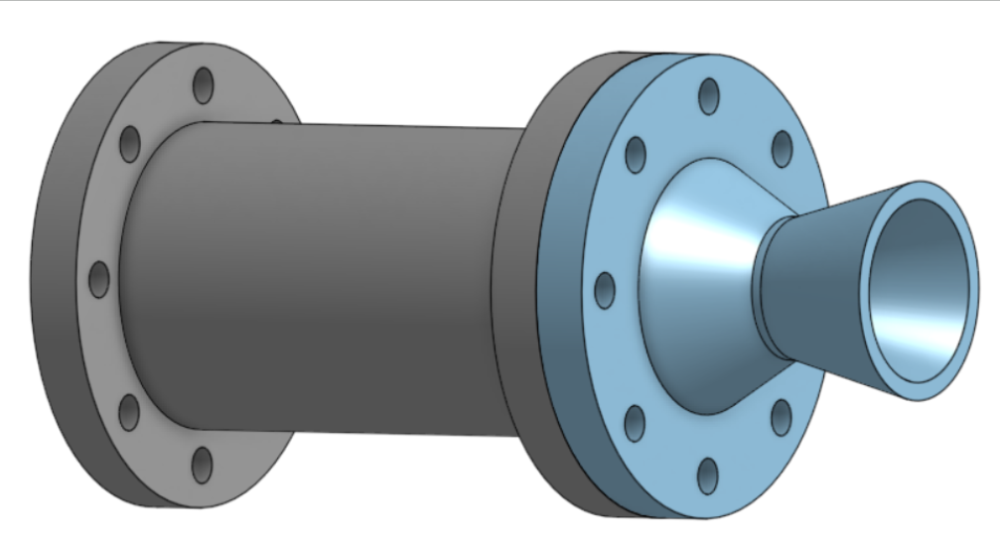
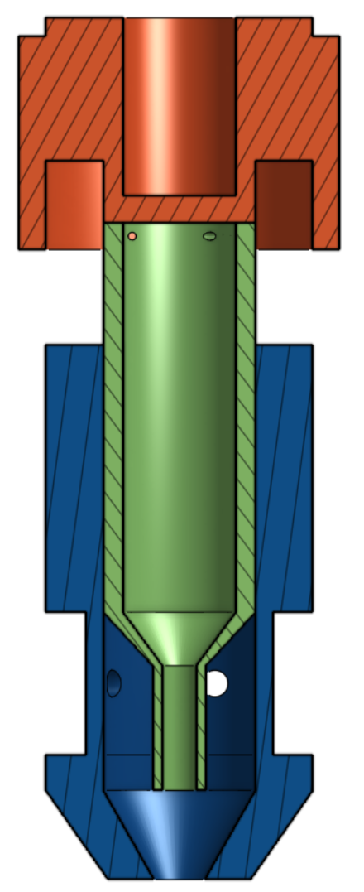
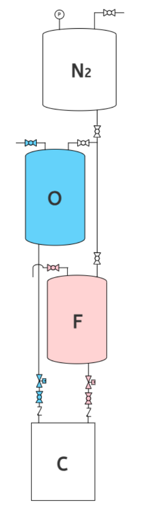

Development of a Bi-swirl Injector & Regenerative Cooling System
본 프로젝트는 친환경 추진제인 아산화질소(N2O)와 에탄올을 사용하여 추력 500N을 달성하는 것을 목표로 합니다. NASA CEA를 통해 최적의 연소 압력과 혼합비(MR)를 도출하였습니다.
추력 방정식과 질량 유량 공식을 사용하여 노즐 목(Throat)과 출구(Exit) 면적을 계산하였습니다. 초기 모델은 Conical Nozzle(원뿔형 노즐) 형상을 채택하였으며, 추후 Bell Nozzle로 고도화할 계획입니다.
이미지 추가 방법:
PDF의 'Design Nozzle' 슬라이드를 캡처하여
images/nozzle_design.png 이름으로 저장하세요.
연소 효율을 극대화하기 위해 이중 스월 인젝터(Bi-swirl Injector) 방식을 채택했습니다. 산화제(N2O)와 연료(Ethanol)가 각각의 스월 챔버를 통해 분사되어 미립화와 혼합을 촉진합니다.
이미지 추가 방법:
PDF의 'Design Injector' (CAD 모델) 부분을 캡처하여
images/injector_design.png 이름으로 저장하세요.
| Parameter | Oxidizer (N2O) | Fuel (Ethanol) |
|---|---|---|
| Tangential Holes | 4 ea | 4 ea |
| Swirl Chamber Radius | 8.55 mm | 6.35 mm |
| Discharge Coefficient (Cd) | 0.34 | 0.18 |
안정적인 유체 공급을 위한 배관 및 계장 설계도입니다. 질소(N2) 가압 방식을 사용하여 산화제와 연료 탱크에 압력을 가합니다.
이미지 추가 방법:
PDF의 'P & ID' 슬라이드를 캡처하여
images/pid.png 이름으로 저장하세요.